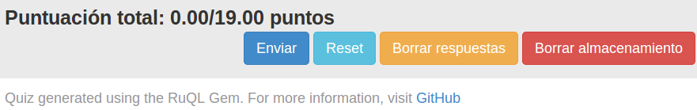

Cuestionario de entrenamiento para alumnos: HtmlForm renderer
Este renderer permitirá generar un documento HTML5 con un formulario en el que se encuentran todas las
preguntas listas para ser completadas desde el navegador. Posee además todos los JavaScripts necesarios
para la correción automáticas de las mismas.
El objetivo de este renderer es proporcionar al alumno una serie de preguntas para que practique con vistas
a afrontar un examen oficial. La principal ventaja que ofrece es la portabilidad: al ser un documento HTML puede
alojarse en cualquier servidor o ejecutarse localmente desde un navegador sin tener que configurar nada previamente.
Solo es necesario tener conexíon a Internet ya que existe un JavaScript que necesita ser descargado mediante
un $CDN$.
La sintaxis para ejecutar este renderer es la siguiente:
[~/tmp]$ ruql example.rb HtmlForm -t templates/htmlform.html.erb > example.html
donde la opción (-t) permite especificar un determinado template para incrustar las preguntas del cuestionario.
A continuación se enumerarán todas las características de este renderer:
- Permite añadir uno o más JavaScripts al cuestionario que se generará.
[~/tmp]$ ruql example.rb Html5 -j examples/test.js > example.html
- Permite añadir uno o más ficheros de fragmentos de código HTML en la cabecera
del cuestionario que se generará.
[~/tmp]$ ruql example.rb Html5 -h examples/partial.html > example.html
- Permite la posibilidad de añadir más de una hoja de estilo CSS al cuestionario que se generará.
[~/tmp]$ ruql example.rb Html5 -c examples/style1.css
-c examples/style2.css > example.html
- Permite añadir un $Header$ y un $Footer$ personalizado al cuestionario que se generará. Se deberá indicar
en el fichero Ruby. Se puede especificar como un string o indicar el path donde se encuentra el fichero que contiene
dicho código HTML.
Figura 4.1:
Código para incluir un header personalizado
|
|
Figura 4.2:
Código para incluir un footer personalizado
|
|
- Los textos de las preguntas admiten ahora caracteres HTML escapados usando el método escape.
Figura 4.3:
Ejemplo de pregunta con HTML escapado
|
|
- El cuestionario es capaz de renderizar expresiones escritas en LaTeX.
Figura 4.4:
Ejemplo de pregunta con código LaTeX
|
|
Figura 4.5:
Ejemplo de pregunta con código LaTeX renderizada
|
|
- Las preguntas de completar permiten ahora respuestas númericas y de código JavaScript.
Figura 4.6:
Ejemplo de pregunta con respuesta numérica
|
|
Figura 4.7:
Ejemplo de pregunta con respuesta de tipo JavaScript
|
|
- Las espacios para rellenar las respuestas de las preguntas de completar se ajustan al tamaño de dicha respuesta.
Para ello basta especificar tantos guiones '-' como caracteres contenga la respuesta en el fichero Ruby. Es necesario un mínimo
de tres guiones, de lo contrario, no se traducirán dichos guiones a etiquetas input HTML.
En caso de querer mostrar mas de tres guiones sin que sean traducidos a inputs, se deben escapar usando un backslash ('\')
Figura 4.8:
Ejemplo de pregunta con respuestas de múltiples longitudes
|
|
Figura 4.9:
Pregunta con respuestas de múltiples longitudes
|
|
- Cuando en una pregunta existen numerosos huecos para escribir respuestas, en el array de respuestas podrá haber alguna de ellas que no mantiene
su correspondencia con el índice que ocupa, por lo que se han añadido dos nuevas maneras simplificadas de escribir estas preguntas de completar:
- Colocando la respuesta de la pregunta junto a sus guiones correspondiente. Para este tipo de escritura, solo se admiten respuestas de tipo String.
Figura 4.10:
Ejemplo del primer tipo de pregunta simplificada
|
|
- Usando una notación de Hash: especificando una clave seguida de los guiones de la respuesta y definir su correspondencia en el método definido
para escribir la respuesta.
Figura 4.11:
Ejemplo del segundo tipo de pregunta simplificada
|
|
- Se han añadido dos nuevos tipos de preguntas:
- Validación automática mediante JavaScript de las preguntas que han sido rellenadas. Para corregir respuestas de tipo Regexp
se utiliza XRegExp, mucho más potente que las expresiones regulares proporcionadas en JavaScript nativo. Esta validación muestra:
- La nota obtenida en esa pregunta.
- La explicación asociada a esa respuesta (si se ha especificado en el fichero Ruby).
Figura 4.20:
Ejemplo de pregunta corregida
|
|
- La puntuación total al final de la página.
Figura 4.21:
Puntuación total
|

|
- Almacenamiento local de las respuestas introducidas usando Local Storage de HTML5.
- Menú contextual al hacer click derecho sobre el campo de respuesta para ver la respuesta correcta de dicha pregunta.
Esta funcionalidad sólo está disponible para preguntas de completar, cuyas respuestas sean strings,
regexps o numéricas.
Figura 4.22:
Ejemplo de mostrar respuesta correcta en pregunta de completar
|
|
Para las preguntas tipo test existe un botón que marca las respuestas correctas.
Figura 4.23:
Ejemplo de mostrar respuesta correcta en pregunta tipo test
|
|
- Internacionalización: la gema comprueba el idioma del sistema para ofrecer la traducción adecuada al idioma del usuario
de diversos mensajes como la corrección de cada pregunta (correcto/incorrecto) o la alerta que anuncia que se ha borrado el
Local Storage.
Actualmente solo soporta inglés y español. Para cualquier otro idioma, se utiliza el inglés por defecto.
Figura 4.24:
Mensaje en español de Local Storage borrado
|
|
Subsecciones
Juan José
2014-07-10
![\includegraphics[width=0.4\textwidth]{images/header.eps}](header.png)
![\includegraphics[width=0.4\textwidth]{images/footer.eps}](footer.png)
![\includegraphics[width=1\textwidth]{images/tag.eps}](tag.png)
![\includegraphics[width=0.6\textwidth]{images/latex.eps}](latex.png)
![\includegraphics[width=0.8\textwidth]{images/latex2.eps}](latex2.png)
![\includegraphics[width=0.6\textwidth]{images/numeric_answer.eps}](numeric_answer.png)
![\includegraphics[width=1\textwidth]{images/javascript_answer.eps}](javascript_answer.png)
![\includegraphics[width=1\textwidth]{images/input.eps}](input.png)
![\includegraphics[width=0.8\textwidth]{images/input2.eps}](input2.png)
![\includegraphics[width=1\textwidth]{images/simplificated1.eps}](simplificated1.png)
![\includegraphics[width=1\textwidth]{images/simplificated2.eps}](simplificated2.png)
![\includegraphics[width=0.8\textwidth]{images/dd1.eps}](dd1.png)
![\includegraphics[width=0.8\textwidth]{images/dd1r.eps}](dd1r.png)
![\includegraphics[width=1\textwidth]{images/dd2.eps}](dd2.png)
![\includegraphics[width=1\textwidth]{images/dd2r.eps}](dd2r.png)
![\includegraphics[width=0.6\textwidth]{images/dd3r.eps}](dd3r.png)
![\includegraphics[width=0.9\textwidth]{images/programming1r.eps}](programming1r.png)
![\includegraphics[width=0.7\textwidth]{images/validation1.eps}](validation1.png)
![\includegraphics[width=0.8\textwidth]{images/show_answer.eps}](show_answer.png)
![\includegraphics[width=0.65\textwidth]{images/show_answer1.eps}](show_answer1.png)
![\includegraphics[width=0.7\textwidth]{images/i18n.eps}](i18n.png)